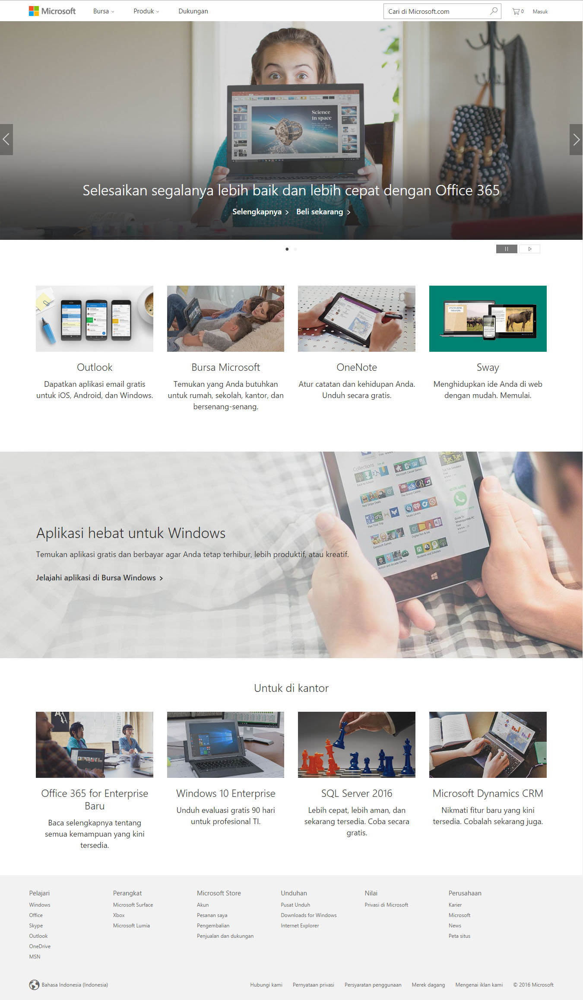

Tampilan wibesite Microsoft

1. Mengapa website tersebut kamu pilih ?
Simple, detile, mudah untuk di kunjungi dan di mengerti. banyak foto yang menggambarkan apa yang anda dapatkan jika mengklik link tersebut. fitur yang jarang di kunjungi tidak di masukan pada halaman utama maka tampilan yang di tampilkan memuatkan link yang sering di kunjungi dan tentunya wibsite informasi utama tentang microsoft.
2. Hal apa yang di sajikan atau di jual ?
apakah ada masalah yang diselesaikan oleh wibesite tersebut ?
Website ini menyajikan pembelajaran tentang microsoft dan menjual software microsoft versi terbaru untuk segala macam os komputer,
tidak ada.
3. Bagian mana pada website tersebut yang paling menarik dan paling penting ?
Bagian paling penting dan menarik pada wibesite ini adalah bagian header dengan gambar yang sangat besar dan di dalam gambar terdapat url untuk mengetahui lebih dalam tentang microsoft dan url untuk membeli sofware microsoft.
4. Deskripsikan website tersebut dengan secara visual, dengan minimal 5 sifat ?
5. Deskripsikan sifat konten, fokus, atau tujuan website tersebut, dengan minimal 5 sifat
6. Seberapa mudah kamu dapat menemukan hal yang kamu cari dari halaman utama ?
Bagaimana dari halaman lain ?
Sangat mudah karena pada halaman utama sudah di sediakan link-link tujuan tentang microsof dan pada halaman lain hanya terfokus pada apa yang di tuju dan sedikit link yang tersedia untuk menuju link yang ingin di tuju selanjutnya.
7. Seberapa mudah kamu dapat browsing semua konten di dalamnya ?
Sangat mudah sekali pada halaman depan sudah di sediakan semua konten yang ada tinggal kita open link pada tab baru satu persatu maka akan terbuka semua konten yang ada.
8. Apa yang kamu rasakan setelah berada di website tersebut ?
Saya merasa senang karena sangat mudah untuk di telusuri lebih dalam tentang microsoft dan terfokus dengan apa yang di tuju sehingga dapat memperjelas isi dari link tersebut.
9.Jika website tersebut menjual sesuatu, apakah kamu pernah membeli sesuatu yang di jual di sana ?
Mengapa ya dan mengapa tidak ?
Tidak pernah, Karena membutuhkan biaya sedangkan di internet banyak copyan dan kunci software microsoft yang gratis jadi saya lebih memilih mencari yang gratis di banding yang berbayar untuk lebih menghemat biaya pengeluaran.